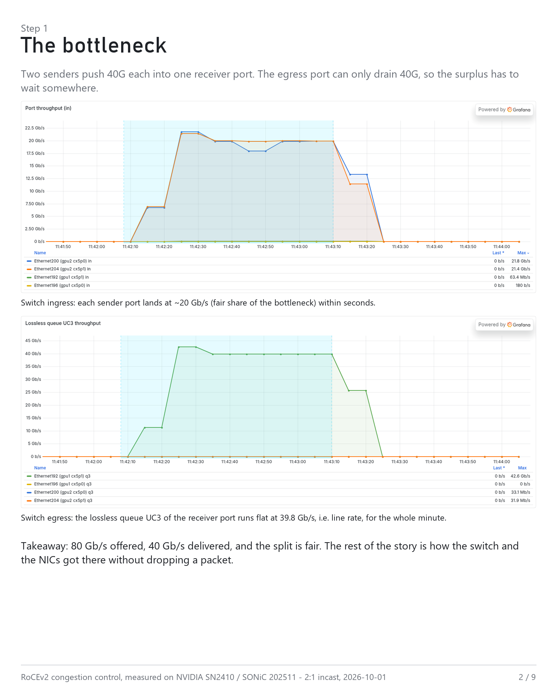
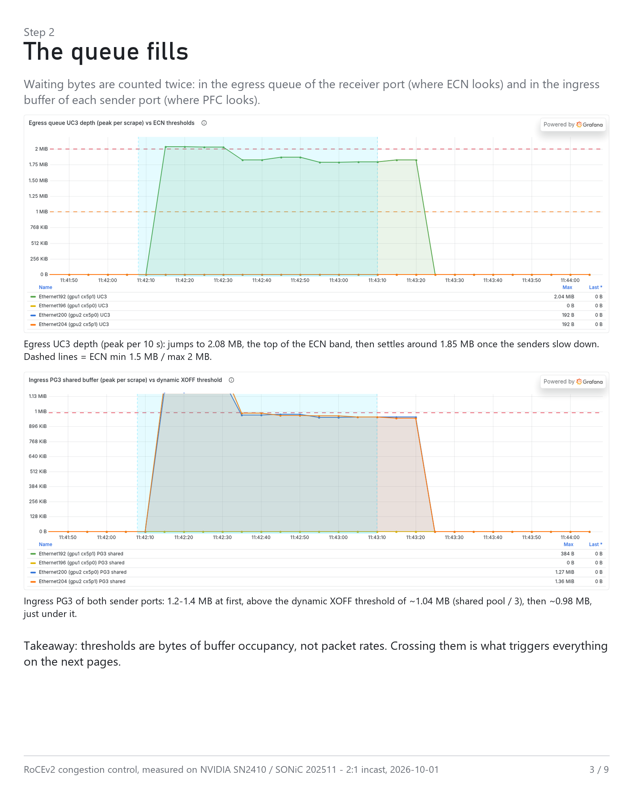
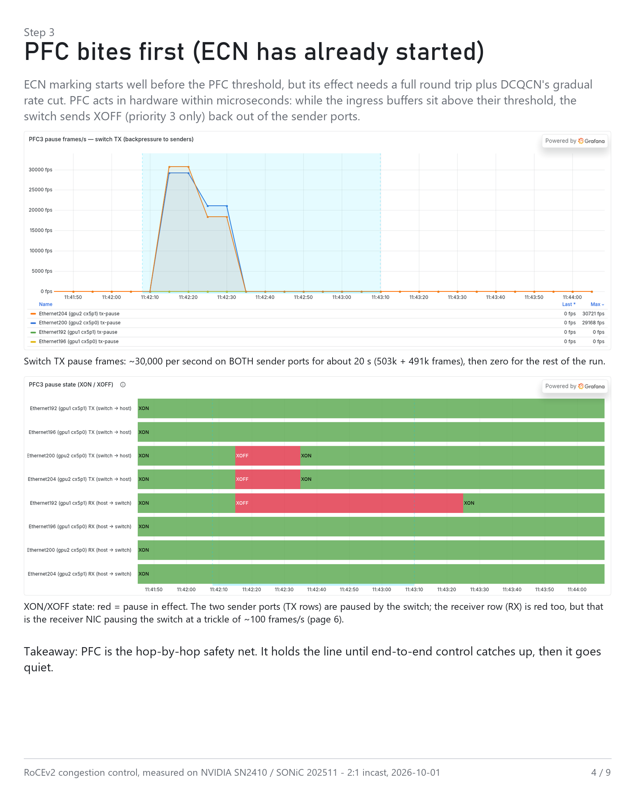
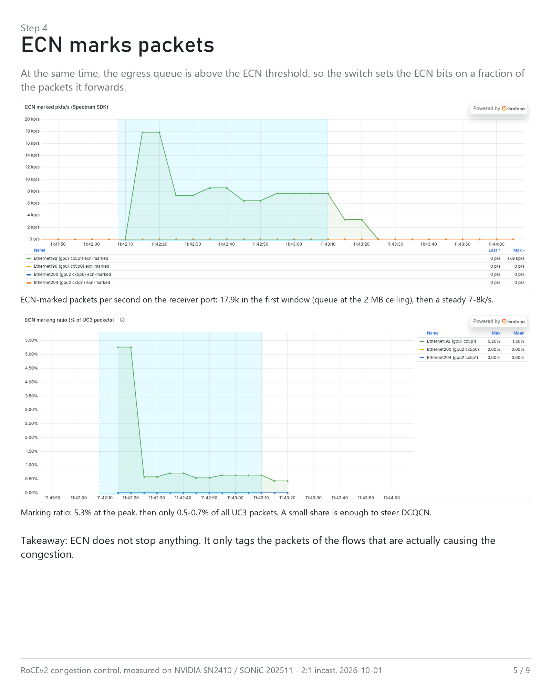
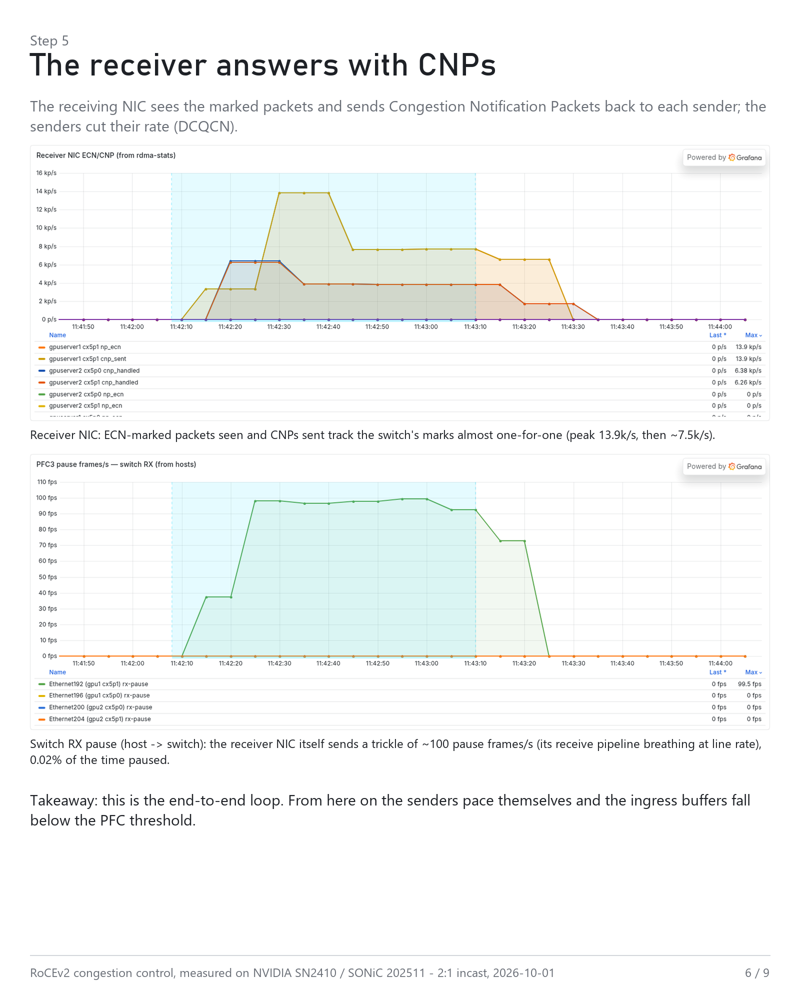
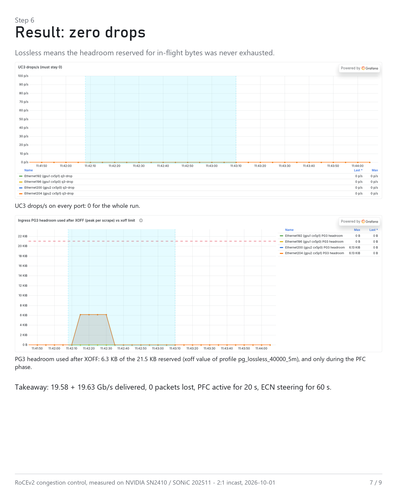
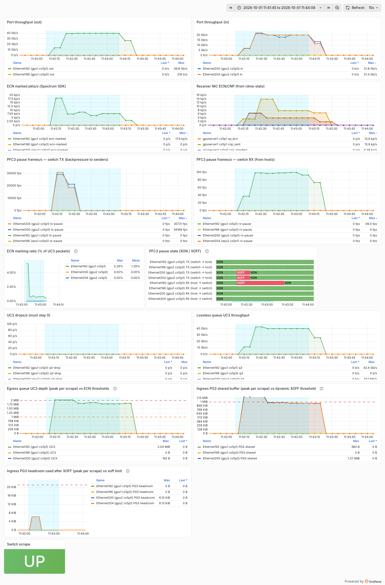

1. Why SONiC this time2. Topology and setup 3. The chain, step by step4. Three ECN settings 5. Measurement lessons6. Code and dashboard
1. Why SONiC this time
Lossless Ethernet for RoCE stands on two mechanisms that act at different places and at different speeds. PFC works hop by hop: the switch watches the ingress buffer of each port and, when a priority group crosses its threshold, sends XOFF back out of that port in hardware, within microseconds. ECN + DCQCN works end to end: the switch marks a fraction of the packets leaving a congested egress queue, the receiving NIC answers with Congestion Notification Packets, and the sending NIC cuts its rate — a full round trip plus a gradual ramp. Tuning them means seeing both at once, together with the buffer occupancy that triggers each.
My previous lab fabric was a Nexus 9332PQ on NX-OS 9.3. I could not get the switch-side view — per-queue ECN marks and buffer occupancy over time — out of the CLI on that platform in a form I could poll and graph; what I had were pause-frame totals from show interface priority-flow-control and the NIC counters, which is what the earlier lossless-ethernet-monitoring dashboard was built on. So the fabric moved to a used NVIDIA SN2410 (Spectrum-1) running community SONiC 202511, where every counter lives in Redis and is one sonic-db-cli call away.
Every counter except one. On Spectrum-1 the SAI layer reports the WRED/ECN statistics as unsupported, so COUNTERS_DB never contains ECN marks. The Mellanox SDK inside the syncd container still has them (sx_api_cos_redecn_counters_get), and a 30-line script executed with docker exec -i syncd python3 - turned the guesswork into a per-port counter. That one number is what makes the rest of this page possible.
2. Topology and setup
GPU server 2 (sender) GPU server 1 (receiver)
ConnectX-5 cx5p0 (10.0.3.1) --40G--> Ethernet200 \
SN2410 --> Ethernet192 --40G--> cx5p1 (10.0.0.1)
ConnectX-5 cx5p1 (10.0.2.1) --40G--> Ethernet204 /
80 Gb/s offered, 40 Gb/s drained
PFC XOFF : switch -> senders (hop by hop, priority 3 only)
ECN/CNP : switch marks at the egress queue -> receiver NIC sends CNPs -> senders slow down (DCQCN)- Traffic: perftest
ib_write_bw, RDMA WRITE, 64 KB messages, 4 queue pairs per flow, RoCEv2, DSCP 3, 4 KB RDMA MTU, 60 s, both flows started together. - Switch QoS: DSCP 3 → TC 3 → lossless egress queue UC3 / ingress priority group PG3; PFC on priority 3; WRED/ECN profile
AZURE_LOSSLESSon UC3, marking probability 5 % at the top of the band. Dynamic buffer model:ingress_lossless_pool3,109,376 B, alpha = 1, so with two active PGs the XOFF threshold sits at roughly pool / 3 ≈ 1.04 MB. Headroom profilepg_lossless_40000_5m: xon 19,456 / xoff 21,504 / size 40,960 B. - ECN profile for the run shown in section 3: marking starts at 1.5 MB and reaches its maximum probability at 2 MB. The start point was moved up from the 1 MB default on purpose, so that PFC is clearly visible on the same timeline; the default is compared in section 4.
- NICs: ConnectX-5 Ex, inbox mlx5 driver, DCQCN enabled, DSCP 3 mapped to priority 3, PFC on priority 3, global pause off.
- Telemetry: SONiC
COUNTERS_DB+USER_WATERMARKS+ the Mellanox SDK (ECN marks) over SSH, NIC counters viaethtool -Sand/sys/class/infiniband/*/hw_counters, two small Prometheus exporters, Grafana. Switch counter polling at 1 s, scrape every 10 s.
3. The chain, step by step
One run: ECN min 1.5 MB / max 2 MB, 2:1 incast, 60 s. Each figure is two dashboard panels from the same time window.
Step 1 — The bottleneck

Two senders push 40G each into one receiver port. The egress port can only drain 40G, so the surplus has to wait somewhere. 80 Gb/s offered, 40 Gb/s delivered, and the split is fair. The rest of the story is how the switch and the NICs got there without dropping a packet.
Step 2 — The queue fills

Waiting bytes are counted twice: in the egress queue of the receiver port (where ECN looks) and in the ingress buffer of each sender port (where PFC looks). Crossing those two thresholds is what triggers everything on the following steps.
Step 3 — PFC bites first (ECN has already started)

ECN marking starts well before the PFC threshold is reached, but its effect needs a full round trip plus DCQCN's gradual rate cut. PFC acts in hardware within microseconds: while the ingress buffers sit above their threshold, the switch sends XOFF (priority 3 only) back out of the sender ports. PFC is the hop-by-hop safety net; it holds the line until end-to-end control catches up, then goes quiet.
Step 4 — ECN marks packets

At the same time the egress queue is above the ECN threshold, so the switch sets the ECN bits on a fraction of the packets it forwards. ECN does not stop anything; it tags the packets of the flows that are actually causing the congestion, and a small share is enough to steer DCQCN.
Step 5 — The receiver answers with CNPs

The receiving NIC sees the marked packets and sends Congestion Notification Packets back to each sender; the senders cut their rate. This is the end-to-end loop: from here on the senders pace themselves and the ingress buffers fall below the PFC threshold. The receiver NIC's own pause trickle is reported as observed; it was absent in the previous day's runs and its cause was not established.
Step 6 — Result: zero drops

pg_lossless_40000_5m), and only during the PFC phase.Lossless means the headroom reserved for in-flight bytes was never exhausted. 19.58 + 19.63 Gb/s delivered, 0 packets lost, PFC active for 20 s, ECN steering for 60 s.
4. Same incast, three ECN settings
Identical traffic, 60 s each, same day. The ECN threshold decides how long PFC has to work:
ECN setting (AZURE_LOSSLESS) | PFC XOFF on sender ports | Egress UC3 queue | ECN marks | Throughput / drops |
|---|---|---|---|---|
| min 1 MB / max 2 MB (default) | ~10 s burst (10,126 + 4,466 frames), then silent | 2.0 MB peak → 1.5–1.6 MB | 7–8k pkt/s (0.6 %) | 19.6 + 19.6 Gb/s / 0 |
| min 1.5 MB / max 2 MB (section 3) | ~20 s, ~30k frames/s on both ports (503k + 491k), then silent | 2.08 MB → ~1.85 MB | 17.9k → 7–8k pkt/s (5.3 % → 0.5–0.7 %) | 19.6 + 19.6 Gb/s / 0 |
| ECN disabled (PFC only) | 60 s non-stop, ~40k frames/s per port (2.34M + 2.35M) | pinned at 2.09 MB | 0 | 19.6 + 19.6 Gb/s / 0 |
With ECN off, the only brake is PFC, so the switch pauses the senders continuously and the queue never leaves its ceiling. The later ECN starts, the longer PFC has to fill in. Throughput, fairness and loss look identical in all three runs; the difference is how the fabric got there.
Two side notes from the same runs. The ingress PG3 occupancy of both sender ports sat at or just above the dynamic XOFF threshold (~1.04 MB) exactly while PFC was active, and below it afterwards, which is the dynamic-threshold formula (alpha × free pool, pool shared by three active PGs) showing up in the data. And after a config ecn change the new thresholds appeared in ASIC_DB only after tens of seconds; the first check still showed the old values. Verify there before starting a run.
5. Measurement lessons
Most of the lab time went into making the numbers trustworthy, not into the test itself.
- A cached exporter drifts against the scrape clock. The first exporter polled the switch in a background thread and served a cache; Prometheus saw 0 / 2× rates and the throughput panel jumped between 0, 49 and 58 Gb/s on a 40G link. Fix: collect on demand at scrape time over one persistent SSH session.
- SONiC updates queue counters every 10 s by default. With a 10 s scrape that aliases badly.
counterpoll queue interval 1000made the line flat at 39.8 Gb/s; syncd CPU went from ~1.5 % to ~1.7 %.counterpoll watermark interval 1000likewise for the buffer peaks. - Watermarks are peaks since the last clear. The exporter reads the USER watermarks (UC3 shared, PG3 shared, PG3 headroom) and publishes a
WATERMARK_CLEAR_REQUESTafter every read, so each sample means "peak since the previous scrape". Side effect:show queue watermarkon the switch now shows the last ~10 s; use the persistent watermark for all-time peaks. - Grafana's query step hid the interesting part. A 10 s XOFF burst or a headroom peak is a single sample; with the panel's default step on a wide time range the point was skipped and the panel showed 0. Every graph panel now uses a 5 s query step, verified against the raw query (15 s step: TX 0; 5 s step: 1,013 frames/s).
- State-timeline value mappings only apply with color mode "fixed". With the thresholds color mode the XON/XOFF panel printed "1+" and "< 1" instead of XON / XOFF.
- Wrong metric name, empty panel for days. The UC3 panels queried
sonic_queue3_*while the exporter emittedsonic_port_queue3_*. Read the raw/metricsoutput before blaming the switch. - RDMA device names follow the PCI address. Moving the NIC to another slot renamed
rocep130s0f0torocep3s0f0and the receiver-NIC panel went blank. The NIC exporter now finds the device through/sys/class/infiniband/*/device/net/. - Watermarks explain the why; pause and mark counters only show the what. Put both on the same timeline.
6. Code and dashboard

Everything needed to reproduce the dashboard is in github.com/Enizaksoy/SONiC-SN2410-RoCE-Monitoring: the switch exporter (SSH + sonic-db-cli + the SDK helper), the NIC exporter, the importable Grafana JSON, the systemd units (including the one that re-applies NIC QoS at boot, because dcb settings on the inbox driver do not survive a reboot), the Prometheus scrape jobs, and the results carousel as PDF. The SDK script is a read-only call into the Mellanox SDK Python bindings shipped inside the syncd container; it is not a SONiC CLI or SAI interface and may break with another SDK version.
Stack: SONiC 202511 on a used SN2410, two GPU servers with 4× Tesla V100 and ConnectX-5 Ex each, 40G DACs, Prometheus, Grafana.